共榮社會 積極回饋社會的參與者
南亞科技致力於社會的投入，參與公共事務與在地關懷，成為積極回饋社會的參與者，發揮社會影響力與促進社區發展，邁向永續美好的未來。
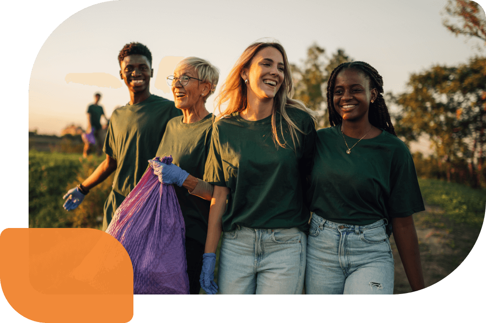
- 南亞科技社會參與投入時數，較2024年增加11.6% 3,987.5 小時
- 年度推廣在地藝文活動參與 2,208 人次
- 移除外來種公斤數(自2020年起) 593.7 公斤
重大議題策略與績效
社會影響力
南亞科技以成為智慧時代最佳記憶體夥伴自許，致力製造營收並將利潤回饋給股東，同時，積極參與公益活動，創造正向影響力，與利害關係人共同邁向共好。本公司呼應聯合國永續發展目標 (SDGs)，將核心能力與SDGs相結合，並發展出南亞科技特有的四大社會參與主軸，包括「人才培育」、「環境保育」、「人文關懷」及「敦親睦鄰」。基於此四大主軸，我們設計多項行動方案，設立短中長期目標，整合公司內外部資源，結合利害關係人如客戶、供應商、公部門、校園、NGO等單位，以落實社會參與的實際行動產生更大的影響力。
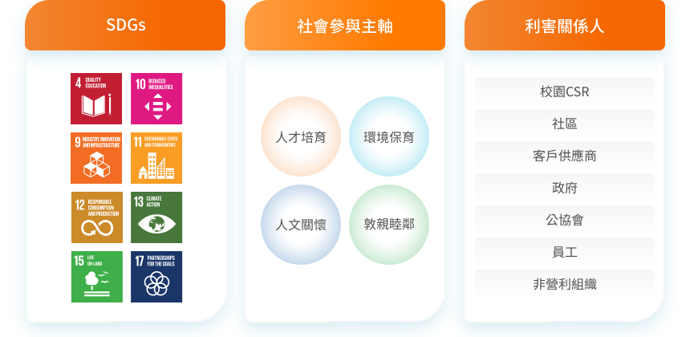
- 人才培育
- 環境保育
- 人文關懷
- 敦親睦鄰
-
人才培育
解決的社會問題
- 教育地球公民永續概念
- 培養青年解決問題的設計思維
- 扶植技術人才，以解決半導體人才供應穩定
- 培育專才
商業效益- 主管擔任業師 (主管參與4位)
- 網路曝光 (臉書平台1篇)
- 支持專業技能運動員 (7名)
社會效益- 推廣永續教育至學生數為1,387人
- 贊助運動員經費 ($174,000元)
-
環境保育
解決的社會問題
- 提升民眾的環境知識與素養，建立環境守護之觀念與永續意識
- 從小地方開始，清潔整理還給大眾一個乾淨的環境
- 守護生物多樣性，防止棲地劣化與外來種入侵，造成生物多樣性的消失
商業效益- 員工向心力 (598員工參與人次)
- 網路曝光率 (社群媒體互動數2,946)
- 環保倡議 (參與2個環保倡議活動)
社會效益- 環境生態多樣性 (移除小花蔓澤蘭155.4公斤)
- 海洋友善 (移除海洋廢棄物76.3公斤)
-
人文關懷
解決的社會問題
- 以人為本提升全民人文素養及寬廣視野
- 支持地方文化藝術發展
- 協助在地文史團體深耕家鄉
- 給予弱勢關懷，提供平台讓各種團體推廣理念
- 宣導責任消費理念，發展共生、共好生活
商業效益- 員工向心力 (454員工參與人次)
- 愛心公益 (感謝狀3張)
- 小農推廣 (8家)
社會效益- 責任消費 (義賣及小農市集消費共計約$312,924元商品)
- 創造友善就業與銷售機會 (資助16個單位)
- 繁榮社區環境 (採購288公斤公平貿易咖啡、全案租金總額297,360元)
- 推廣責任消費 (5間學校)
-
敦親睦鄰
解決的社會問題
- 關注在地福祉，結合鄰里服務，推廣鄰里美好，落實社福工作
- 結合社會資源，推動地方永續經營
商業效益- 鄰里關係強化 (感謝狀1張)
社會效益- 深化社區溝通 (協助改善道路設施，造福周遭鄰里共有16,433人受惠)
社會公益投入資源
改變是影響的開始，南亞科技採用LBG衡量每個公益活動的效益與影響力，逐步調整公益方案與投入資源，並且檢討成效與結果，緊密鏈結營運核心與社會問題。為能深化與擴散企業對社會的長期影響力，公司著眼於自身的營運核心能力與社會需求的鏈結，期盼透過我們最具競爭優勢的專業創新能力，解決社會問題，創造共好美麗家園。
- 社會參與型態
- 社會公益投入資源
-
社會參與型態
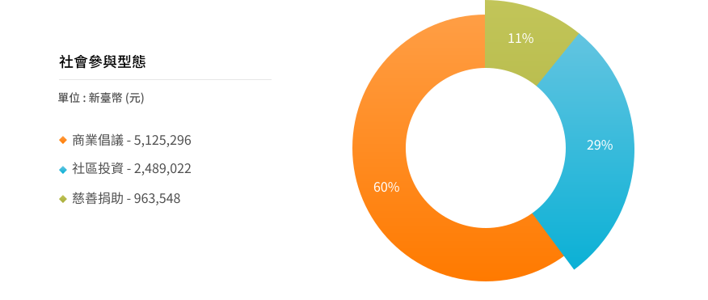
-
社會公益投入資源
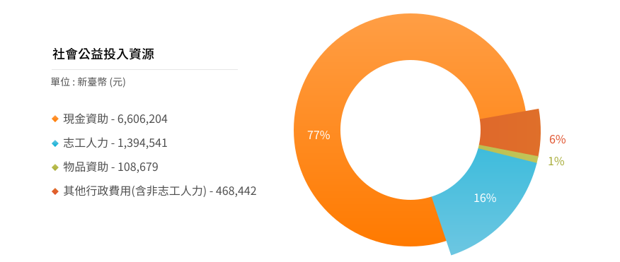
社會參與
社會參與專案
南亞科技在社會參與的投入不僅是單向的公益活動、捐贈，而是希望可以解決當前社會與環境問題。因此在形成四大社會參與主軸過程中，我們不停思考如何透過連結產官學研各方面的資源，共同發揮影響力，發揮領頭的力量致力於「人才培育」、「環境保育」、「人文關懷」、及「敦親睦鄰」等面向的推動中，並透過成果的展現向社會大眾傳遞南亞科技「互動、共好、在地、連結」的企圖心。
- 人才培育
- 環境保育
- 人文關懷
- 敦親睦鄰
-
人才培育
永續教育藍圖－為青年植入永續DNA
南亞科技關注各式永續議題，並推廣ESG (環境、社會、經濟)、 CSR (企業社會責任)、SDGs (聯合國永續發展目標)以及氣候變遷等意識與認知。永續教育藍圖旨在透過與產官學研連結，在培育科技人才以外，進一步扶植多元人才、推動女力及跨領域優秀學子以實現優質教育。
- 教育人數 1,387 人
-
贊助體育項目：
桌球、跆拳道、競技體操、籃球2位國手5其他體育好手
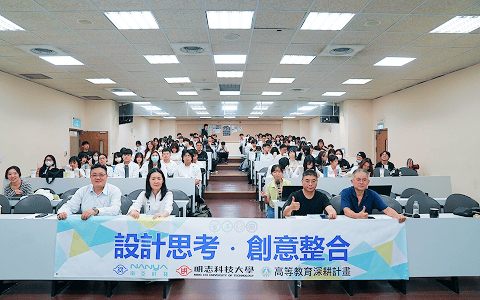
-
設計思考・創意整合產學合作
已連續三年與明志科大合作，結合學校USR (大學社會責任)，透過以人為本的設計理念，引導學生從使用者需求出發，辨識問題與機會，進而提升學生們跨領域設計能量。
-
青年培力飛翔獎學金
南亞科技的教育藍圖不僅涵蓋為DRAM 產業，自2022年起開放「飛翔獎學金」」讓南亞科技同仁子女申請，此希望藉由資源提供者的角色，協助體育專才的選手在培育的路上有穩定的經濟支持。從2022年累計至2025年 共贊助新台幣65萬元整。
-
環境保育
世界綠行動-響應國際環保行動，擴大影響力
南亞科技辦理世界綠行動系列活動，期望透過實際的活動體驗和參與，提升大家對環境保育的關注。我們對外與各界夥伴響應世界環保節日，內部則每年根據不同主軸推廣環保意識，提升大家對生態、自然棲地、氣候變遷等議題的專注。透過公司辦理實際的活動供同仁參與，喚起每個人保護地球的使命感。
- 網絡影響力 2,946 臉書互動
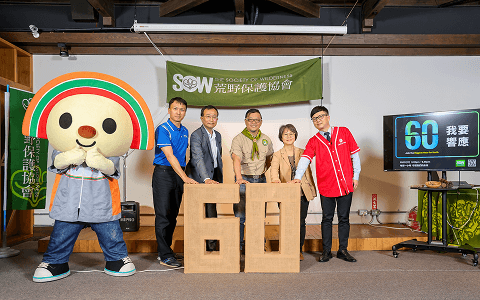
-
植樹節
南亞科技響應植樹節及推動企業ESG理念，與桃園市龜山區公所、企業團體以及市民朋友共同種下象徵綠色永續的桃園原生樹種—流蘇。並領先全台公布「樹木植栽種植及維護指引」，為城市永續發展樹立新標竿。
-
玩具回收
南亞科技深耕資源循環教育，於4月12日舉辦溫馨的「玩具回收親子活動」。透過回收再利用的實踐，讓同仁與孩子一同學習減少廢棄物，並將舊玩具重新整修、賦予新價值。透過活動不僅強化了親子關係，更將永續發展的種子播種於下一代心中。
-
五股溼地復育 - 守護自然過濾器
自2020年起與荒野保護協會合作，號召志工同仁與眷屬共同投入外來種小花蔓澤蘭移除工作，一共移除155.4公斤。此次新增鹵蕨復育任務，協助恢復具備重要生態指標意義的鹵蕨復育工作。在一增(鹵蕨復育)一減(移除小花蔓澤蘭)之間，代表著對生態韌性的重視，透過志工持續的實地參與，共同為五股溼地的長期健康與生物多樣性累積正向能量。
-
人文關懷
提升文化產業-傳承在地技藝，創造新的記憶
合作單位：文化部文化策進院、泰山區公所、明志科技大學、頂泰山巖、明志書院、義秀鼓藝工房、天馬戲作劇團、玉米雞劇團、蔣見美教授文教基金會等。
- 促進國內文化產業提升年度經費 300 萬
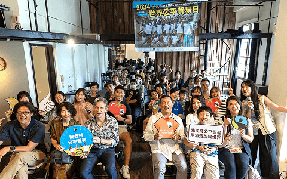
-
支持國內文化產業發展
南亞科技積極挹注資源於國內影音及藝文團體，透過家庭日、電影欣賞及親子活動，邀請藝文團體演出，促進文化藝術的多元發展的同時，也鼓勵員工接觸文化藝術活動、培養藝文氣息。藉由企業贊助藝文活動，建立合作夥伴關係，共創經濟與文化雙贏，為臺灣打造出更加多元、豐富的文化環境。
-
結合地方資源推動在地人文特色
攜手明志科技大學，結合教育部推行的大學社會責任實踐計畫之「北臺首學帶狀文物館深耕計畫」，共同推動「泰山文藝復興」，並結合地方藝文團體與組織，以文化教育方式搭配導覽以及各式體驗活動。以具體行動支持泰山地方創生，致力於社區營造，讓大眾認識泰山在地廟宇傳承以及地方特色，為珍貴的在地傳統「技藝」，創造新的「記憶」。
-
泰山獅王節
作為泰山地區重要文化盛事之一的「新北市泰山獅王文化節」每年由泰山區公所主辦，南亞科技協辦。該活動始於慶祝頂泰山巖與下泰山巖主祀神「顯應祖師」誕辰(每年農曆9月18日)。後因廟宇慶祝活動，多搭配舞獅表演，因此發展出了「泰山獅王爭霸賽」。隨著祭祀活動越來越盛大，漸漸從在地文化活動自2006年起開始舉辦臺灣舞獅指標性競賽「泰山獅王爭霸賽」至今已經連續辦理19年。南亞科技連續8年贊助支持此一地方傳統盛事。
-
敦親睦鄰
攜手鄰里-參與鄰里公共事務打造和諧互惠互利生活圈
參與鄰里公共事務打造和諧互惠互利生活圈。
- 鄰里公共事務推廣贊助共計約 130 萬
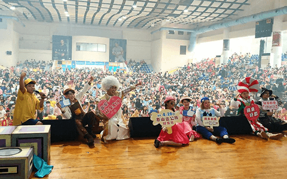
-
歲末年終圍爐
體察在地弱勢族群需求，南亞科技自2020年起持續每年歲末年終之際，固定與南亞塑膠公司、泰山區公所合作辦理歲末年終圍爐活動，回應在地需求關懷弱勢居民。
-
守護用路人安全
南亞科技位於泰山區，廠區聯外道路為南林園區以及南亞科技員工往返泰山重要路段，惟該路段狹小遇尖峰時間行車風險高，又逢新廠擴建工程，為強化道路安全，南亞科技以認養贊助角度，協助泰山區公所於2022年起分階段式進行道路優化:側溝加蓋、部分路段拓寬及側溝清淤等，已於2025年完成。
-
在地藝文推廣
南亞科技支持藝文推廣、重視在地居民，與明志科技大學共同推廣泰山在地藝文活動，豐富社區居民及孩子們藝術視野並與在地社區進行交流。
愛鏈結 X 志工隊 一個人走得快 一群人走得遠
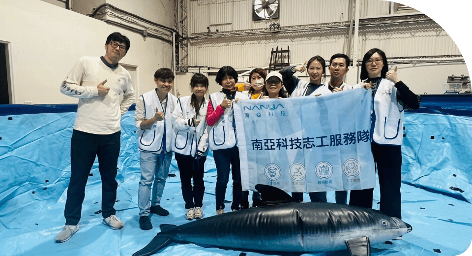
認購偏鄉科學教材
愛鏈結計畫
為擴大影響力及讓各類公益理念被看見，自2021年開始實施愛鏈結計畫，此一倡議鼓勵員工就其所關心之社會議題提出專案申請，公司藉此資助所需資金支持員工將心意化為實際行動，讓愛心遍布全公司，形成正向循環。今年(2025年)，已有7項計畫圓滿完成，顯示此計畫日益成熟並廣受員工歡迎。這項措施不僅有助於發揚各種社會參與初衷，也提供一個平台，讓員工能在其中共襄盛舉、交流心得，共同打造更美好的社會。此計畫將持續進行，以匯集更多人力和資源，為社會帶來更多的正能量。
- 計劃完成 7 個
- 人員參與 169 名
愛鏈結計畫實施辦法
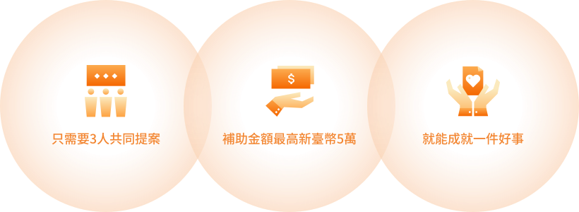
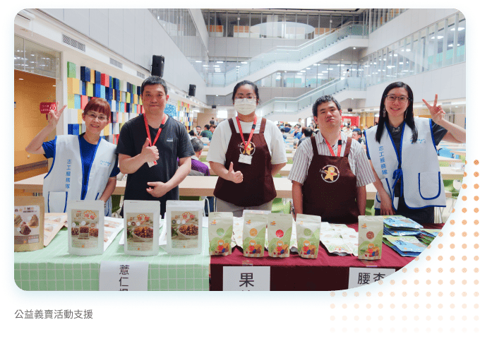
南亞科技志工隊
為強化南亞科技投入社會參與之能量，於2021年成立南亞科技志工隊。由總經理擔任總召、執行副總為副總召、副總經理擔任大隊長，以強化其號召力。志工隊同仁為企業實踐社會責任的核心動力，2021年成立時因疫情影響，參與人數難以突破，但2022年疫情鬆綁後，截至2025年共有240名熱血同仁加入志工行列，持續壯大志工能量。在過去一年，志工隊同仁參與16場實體社會參與活動，並活躍於各種活動，如年節義賣攤位、植樹節、公益路跑、在地藝文活動、環境保育活動等。我們鼓勵並感謝志工同仁投身社會參與，在繁忙的工作之餘，願意以各種多元方式回饋社會。透過有系統的動員與分工，志工不僅成為推動公益與永續行動的重要後盾，更在實際參與中深化對社會參與議題之理解。未來將持續鼓勵更多同仁加入志工行列，凝聚集體力量，擴大正向社會影響，實踐企業與社會共好之目標。
- 2025年志工隊人數 240 名
- 實體社會參與活動 16 場
- 實體社會參與活動 351 人次響應
 最新消息
最新消息
 粉絲專頁
粉絲專頁